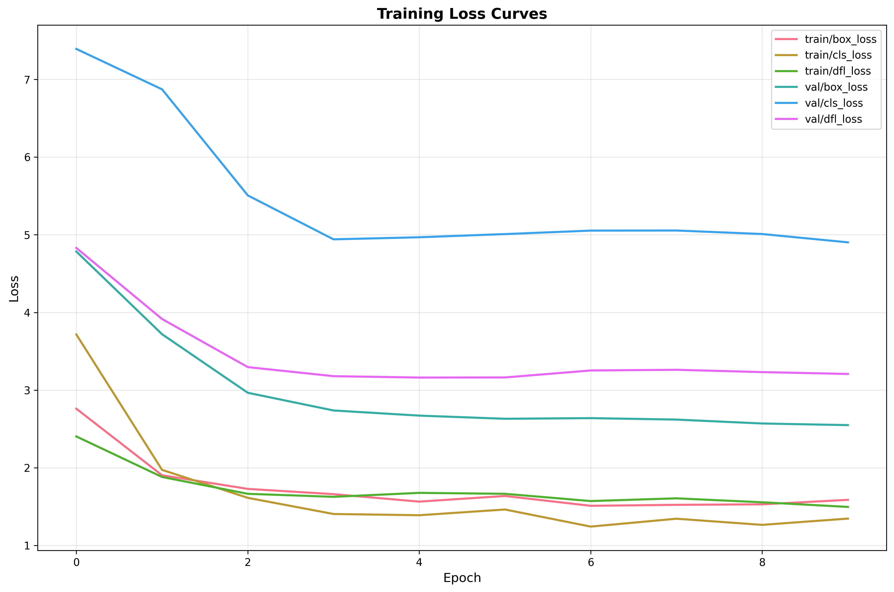
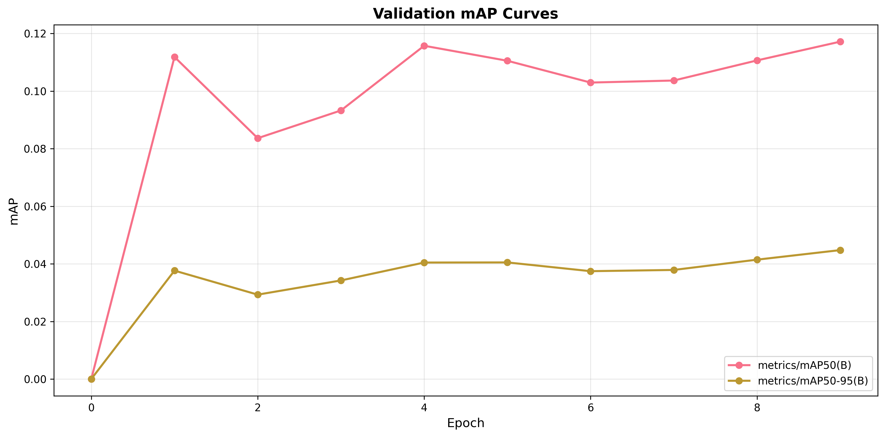
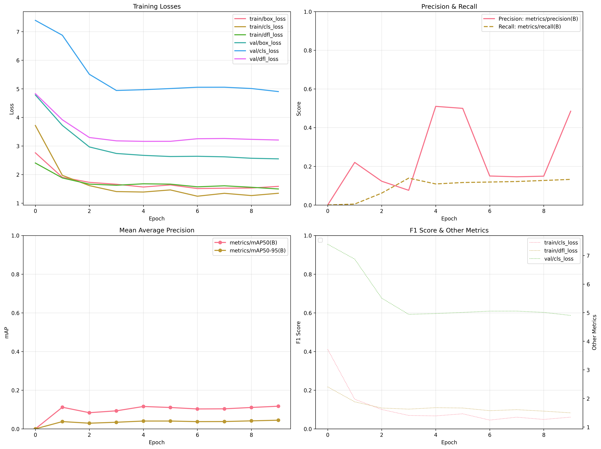
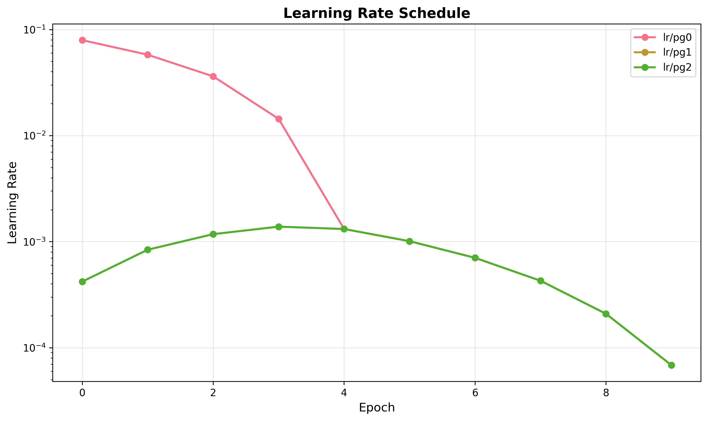
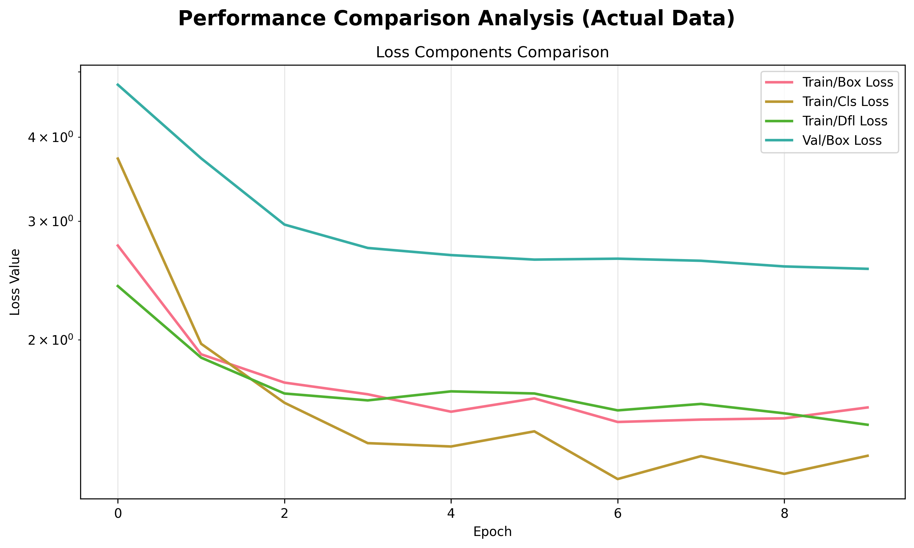

🏆 YOLO Training Report
📊 Executive Summary
Model Architecture
N/A
Total Epochs
N/A
Batch Size
N/A
Image Size
N/A
Device
N/A
Dataset Classes
N/A
📋 Detailed Training Metrics
Epoch-by-epoch training progress with all metrics:
| Epoch | time | train/box_loss | train/cls_loss | train/dfl_loss | metrics/precision(B) | metrics/recall(B) | metrics/mAP50(B) | metrics/mAP50-95(B) | val/box_loss | val/cls_loss | val/dfl_loss | lr/pg0 | lr/pg1 | lr/pg2 |
|---|---|---|---|---|---|---|---|---|---|---|---|---|---|---|
| 1 | 601.9080 | 2.7596 | 3.7158 | 2.4024 | 0.0000 | 0.0000 | 0.0000 | 0.0000 | 4.7840 | 7.3935 | 4.8302 | 0.0794 | 0.0004 | 0.0004 |
| 2 | 1281.2500 | 1.9025 | 1.9719 | 1.8806 | 0.2202 | 0.0049 | 0.1119 | 0.0377 | 3.7189 | 6.8732 | 3.9150 | 0.0578 | 0.0008 | 0.0008 |
| 3 | 1944.7900 | 1.7269 | 1.6118 | 1.6636 | 0.1229 | 0.0615 | 0.0836 | 0.0293 | 2.9650 | 5.5070 | 3.2954 | 0.0362 | 0.0012 | 0.0012 |
| 4 | 2585.2700 | 1.6592 | 1.4037 | 1.6248 | 0.0760 | 0.1389 | 0.0933 | 0.0342 | 2.7369 | 4.9410 | 3.1787 | 0.0144 | 0.0014 | 0.0014 |
| 5 | 3236.2700 | 1.5631 | 1.3877 | 1.6758 | 0.5100 | 0.1089 | 0.1157 | 0.0405 | 2.6708 | 4.9679 | 3.1608 | 0.0013 | 0.0013 | 0.0013 |
| 6 | 3939.7500 | 1.6359 | 1.4616 | 1.6637 | 0.4997 | 0.1162 | 0.1105 | 0.0405 | 2.6301 | 5.0087 | 3.1621 | 0.0010 | 0.0010 | 0.0010 |
| 7 | 4601.6000 | 1.5092 | 1.2415 | 1.5703 | 0.1499 | 0.1187 | 0.1030 | 0.0375 | 2.6384 | 5.0535 | 3.2522 | 0.0007 | 0.0007 | 0.0007 |
| 8 | 5284.4300 | 1.5216 | 1.3428 | 1.6054 | 0.1459 | 0.1215 | 0.1037 | 0.0379 | 2.6197 | 5.0548 | 3.2612 | 0.0004 | 0.0004 | 0.0004 |
| 9 | 5946.0500 | 1.5282 | 1.2638 | 1.5546 | 0.1491 | 0.1268 | 0.1106 | 0.0415 | 2.5693 | 5.0096 | 3.2310 | 0.0002 | 0.0002 | 0.0002 |
| 10 | 6569.9800 | 1.5860 | 1.3444 | 1.4949 | 0.4850 | 0.1325 | 0.1172 | 0.0448 | 2.5484 | 4.9026 | 3.2074 | 0.0001 | 0.0001 | 0.0001 |
Note: Best epoch is highlighted in green.
📈 Training Progress
📉 Loss Curves

📊 mAP Curves

📋 Detailed Training Metrics

📈 Learning Rate Schedule

🎯 Performance Comparison

⚙️ Configuration Summary

⚙️ Configuration Details
| Parameter | Value |
|---|---|
| Optimizer | N/A |
| Learning Rate | N/A |
| Weight Decay | N/A |
| Workers | N/A |
| AMP Enabled | N/A |
| Model Path | /home/alperen/fomac/FoMAC/model-training/ball-detection/models/player_ball_detector/weights/best.pt |
📝 Notes
This report was automatically generated by the YOLO Training Pipeline.
For detailed metrics and raw data, please refer to the Excel report and training logs.
All images are saved in the plots directory alongside this report.